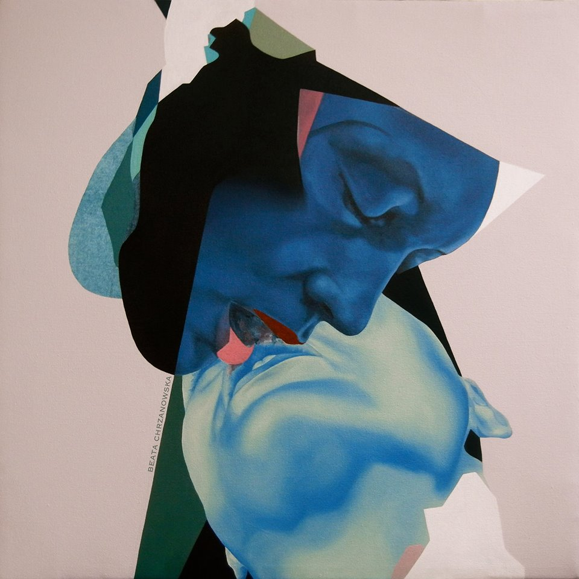
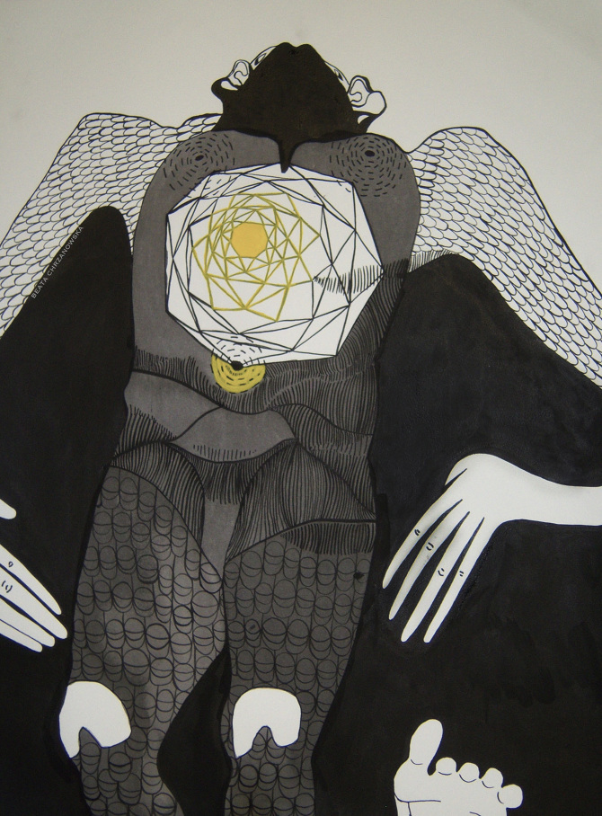

beata chrzanowska
There are many facets of Beata Chrzanowska’s art that steals your gaze and captures your eye, whether it be the vibrancy of the bold colors she works with, the intricacy of the line or the intimacy of a moment depicted. Her work teeters on the edge of surrealism in her juxtaposition of the human figure and the architectural landscapes of her mind. There is a certain edginess to her depiction of the sensual and erotic with the contortion of figures, spliced and layered, and most literally expressed in her vagina series, and “Bisou” series, a tongue and cheek portrayal of passionate kisses between women. Her work has the ability to leave the viewer feeling a somewhat visceral response, almost playing voyeur within the art itself.
Living and as an artist working in one of the busiest places in the world, New York, has certainly got its perks for inspiration. Originally coming from Poland, Chrzanowska is fascinated by people and since the beginning of her art career, her work has often dealt with those interactions. Her work has a very Egon Schiele grit to it, yet a meticulous side like that of Klimt, a certain contrast of hard and soft, and according to Chrzanowska this can be attested to whatever intersections play out between her life and her art.
amfm: How and why do you walk the line between figure and abstract? You sort of explore the body as a landscape, and incorporate geometry and line, yet you start with a single line drawing. How are you inspired by both different concepts when it comes to your art in expressing or conveying something in your portrayal of people?
beata chrzanowska: The figure is everything we can literally recognize as the figure, abstraction is anything that is not the figure in my work. The figure is the grid, the abstraction is my influence and the landscape is what becomes when the two are combined. The idea of a landscape gives me the feeling that I am indeed painting something that is larger than me. Large, powerful and content. The landscape and the human body both are experienced on a 3-dimensional level and that influence awakens the flat lines I begin my paintings with.
amfm: Why has the human form fascinated you for so long? Have you always been making figure work in the crux of your art career? If not, when did you make that transition and what was the catalyst? What else besides the human form and bodies interests you that you would seek to explore with your work?
chrzanowska: The human form is life. Everyday we are interacting, directly and indirectly with human forces. On the canvas I am painting the figure, to bring life, a spirit, into the work. I strip down eyebrows and hair, and I use the pure, unbiased lines of the body to begin. Then I project my ideas and passion on top of those lines building form. For the most part, yes I always resort to the figure to get me motivated for projects. Recently I have been resorting to painterly expression and minimalism. So I am creating pieces that don't have any sign of the human body. I do these exercises to get me re-inspired with the figure. I have always worked with the human body, my high school portfolio has series of drawings of strangers, friends and self portraits. In college I was painting models, friends and self portraits. People, people, people. So the intrigue was always there, in my intent, it was just a matter of picking up a tool and doing the best that I could with it. The catalyst was the grand level of possibilities that I saw in the human form. I can make it large, I can make it black, long, minimal, colorful, bubbly, dark, it's a feeling that I am painting, it's the feelings inside me that I'm painting. My figurative paintings have a landscape presence to them, some more than others, this is another reason why I'm so fascinated with the figure. Just how abstract can I make the figure before it completely leaves the canvas. I see in the future more objects in my pieces, or body parts actually becoming an object. Like a foot or lips only existing as that, and holding their own.
amfm: Can you explain the motif you commonly portray, this idea of the connection and disconnection and why this is a point of interest for you in regards to your art and in your life? How does this idea evolve from your life to your art or vise versa?
chrzanowska: It's more of an idea of connection, because technically I am piecing together elements traditionally not seen combined in this way. They are very particular shapes, they are very delicate shapes and they are dancing together on the canvas, they are all where they should be. In terms of life, we are all customized, we are all piecing our path together, one decision at a time. As I shift, my work shifts, it's the truest way to be an artist, when it comes from your soul.
amfm: Your work is very carnal, and explores the idea of non-traditional execution of the flesh, and pushes the boundaries of intimacy. You recently had a show, Sweet Skin as well. What about flesh and skin fascinates you? What about intimacy and sexuality arouses you? Which moments of intimacy do you find most intriguing?
chrzanowska: I use the flesh as a platform for all my painting experiments. Yes, the flesh is highly sexually charged but I don't begin with that idea. It is the painting process past the prep time where the true sexual energy comes out. Sexual energy is also a peculiar energy, a spiritual energy, a timeless energy; therefore, there is always an interest in it and room for growth. Intimacy and sexuality has made me understand myself better as a person, and it has pushed me to make the type of work I do today, full of gorgeous breasts and decadent vaginas. Bold and loud. The best intimate moments are those that bring out courage, enlighten, and encourage closeness both in life and art.
amfm: You had a piece called "I Dream of Euphoria," what is euphoria to you in a nutshell?
chrzanowska: When I was painting that piece I was breaking into high realism in my work. I was reaching a higher level of euphoria in myself and in my creative process and you can see in the work a shift in the paint application. It's smoother and it's romantic. Euphoria is a feeling of intense stimulation and happiness, it is like seeing or experiencing something for the first time, in an enriching and promising way. The feeling of euphoria in a painting can be its timeless quality, how it keeps giving and stimulating, long after its birth.
amfm: To take your own posed questions on facebook, I ask you, why do you make art, and what is good art?
chrzanowska: I make art because it's a form of release that I don't get from anything else and it satisfies a feeling that I don't get from anything else. It's magical. Good art steals your gaze and captivates your mind.
|  |  |
For more from beata chrzanowska:
beata chrzanowska's website
beata chrzanowska's on facebook
photo credits: beata chrzanowska